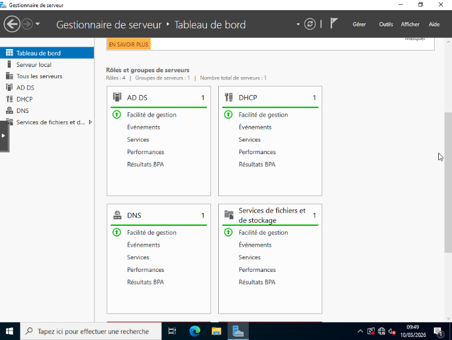

1. Gérer le patrimoine informatique
🖥️ Contrôleur de domaine (AD, DHCP, DNS)
Active DirectoryWindows ServerRéseau
Mise en place d'un contrôleur de domaine pour recenser et identifier les ressources numériques sur differents OS.
